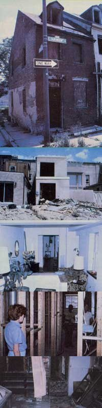

Many urban homesteads might well appear disheartening - despite their ""dollar down"" price tags - to the prospective renovator. These two-ready-for-restoration buildings show how poorly some of the homes in ""neighborhoods on the way up"" have been maintained by absentee landlords... This attractive living room once looked as disheveled as does the one below!... But, with the kind of labor and investment cash that were often required of our nation's original homesteaders, the worst city-steads can become lovely dwellings... And the interiors are also often in need of work.